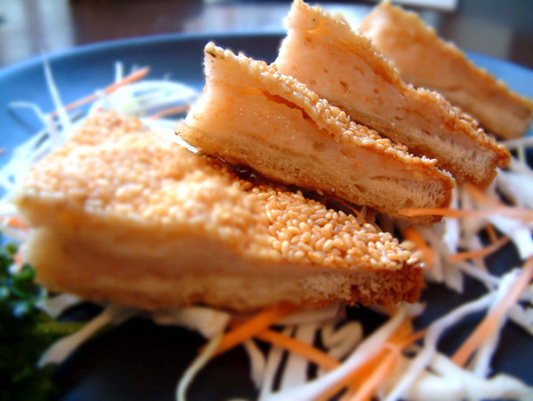

Starter

Sesame Prawn Toast
Amazing, fresh and easy Sesame Prawn toast - a delicious Chinese dim sum favourite.
Recipe
| 100g |
peeled prawns |
| 1 |
egg white |
1 |
clove garlic |
| 3 tsp |
hot pepper sauce |
| 1 tbsp |
cornflour |
| 2 |
spring onions |
| 1 pinch |
ginger |
| 8 slices |
white bread |
| as needed |
cooking oil for deep frying |
|
sprinkle salt |
|
sesame seeds |
Put all ingredients except bread and sesame seeds in food processor and blend to paste.
Remove crusts from bread and cut each piece of bread into 4 triangles.
Spread paste on 1 side of the bread and press down as much as possible.
Sprinkle on sesame seeds or place the seeds on a plate or chopping board and then press the toasts' paste side down into the seeds. Only seed the paste side.
Heat 2 to 3 inches of oil in a pan or wok, until hot but not smoking. Place your toasts into the oil and fry for 30 to 50 seconds each side or as desired.
Main course

Chicken Chow Mein
Delicious egg noodles with chicken, cooked in a flavourful soy sauce based sauce.
Recipe
| 5 ounces |
medium egg noodles |
| 1 tsp |
sesame oil |
11 ounces |
skinless chicken breasts sliced into strips |
| 1 tbsp |
soy sauce |
| 1 tsp |
five-spice powder |
| 1 tsp |
chilli sauce (optional) |
| 1 tbsp |
cornstarch |
| 2 tbsp |
groundnut oil |
| 1 |
red bell pepper, seeded and finely sliced |
| 5 ounces |
bean sprouts |
| 1 |
large spring onion, sliced lengthwise |
| 2 tbsp |
light soy sauce |
|
freshly ground black pepper |
Cook the medium egg noodles for 3 minutes in a pan of boiling water until al dente, or as per the package instructions. Drain, then run them under cold running water, and drain again. Drizzle with a few splashes of sesame oil, and toss through to prevent them from sticking.
Season the chicken with a splash of dark soy sauce, the five-spice powder, and chilli sauce, if using. Mix well. Coat the chicken breasts lightly with the cornstarch.
Heat a wok over a high heat, add groundnut oil, and heat until smoking. Then, add the chicken, and stir-fry for 2-3 minutes, or until cooked through.
Add the red bell peper, and stir-fry for 1 minute, then add the bean sprouts and spring onion and stir-fry for less than 1 minute.
Add the cooked noodles, and season with light soy sauce, 1 teaspoon toasted sesame oil, and black pepper, to taste. Stir well and serve immediately.
Dessert

Almond cookies
A traditional popular treat from the Chinese bakery, perfect to finish off a chinese style dinner.
Recipe (for 30 cookies)
| 2 cups |
flour |
| 1/2 tsp |
baking powder |
1/2 tsp |
baking soda |
| 1/8 tsp |
salt/td>
|
| 1/2 cup |
butter |
| 3/4 cup |
white sugar |
| 1 |
egg |
| 2 1/2 tsp |
almond extract |
| 30 |
blanched almonds |
| 1 |
lightly beaten egg |
Preheat oven to 165 degrees Celsius.
In a large bowl, sift the flour, baking powder, baking soda, and salt.
In a medium bowl, use an electric mixer to beat the butter and sugar. Add the egg and almond extract and beat until well blended. Add to the flour mixture and mix well
Note: the dough will be crumbly at this point, but don't worry - it is supposed to be like this.
Use your fingers to form the mixture into a dough, and then form the dough into 2 rolls or logs that are 10 to 12 inches long. Wrap and refrigerate for 2 hours.
Take a log and lightly score the dough at 3/4 inch intervals so that you have 15 pieces and cut the dough. Roll each piece into a ball and place on a lightly greased cookie tray, approximately 1 1/2 inches apart. Place an almond in the center of each cookie and press down lightly. Repeat with the remaining dough.
Brush each cookie lightly with beaten egg before baking. Bake for 15-18 minutes, until golden brown. Cool and store in a sealed container.